Ein Tier aus lauter geraden Linien. Du wählst eine Vorlage und überträgst sie Punkt für Punkt genau mit Mittellinie oder Achsenkreuz, Zirkel und Lineal. Am Schluss ziehst du alles mit Fineliner aus.
11 VorlagenA4, Bleistift, Zirkel, LinealFineliner 0,5 und 0,3
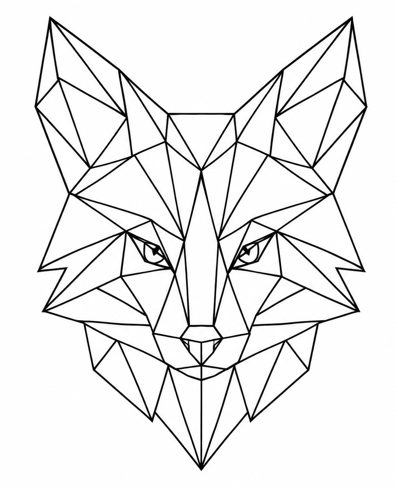
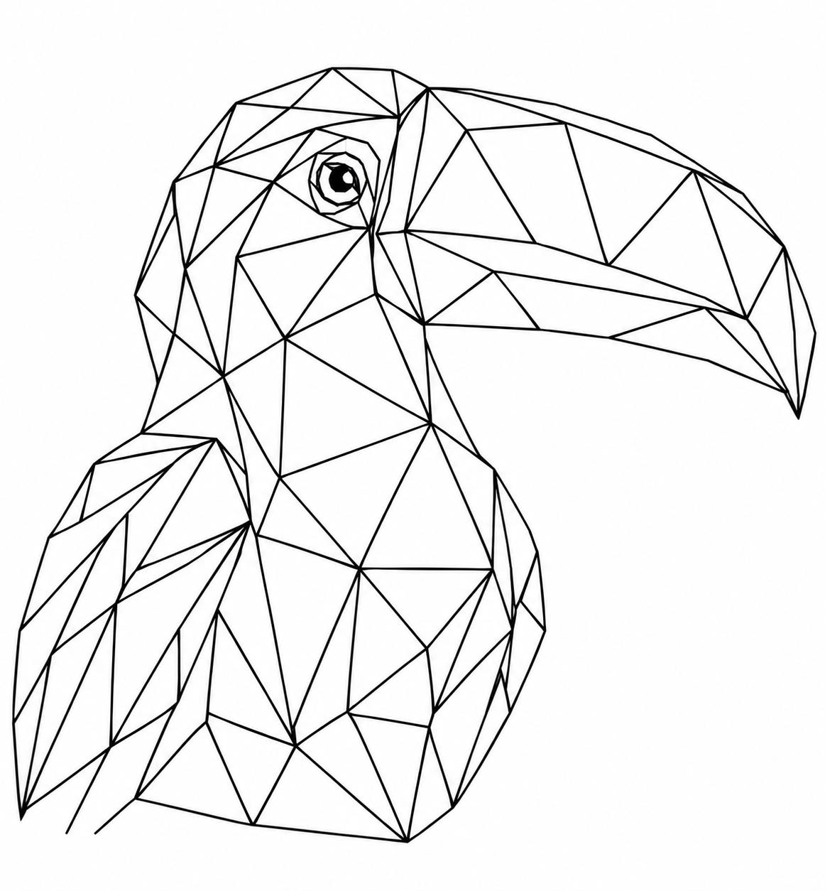
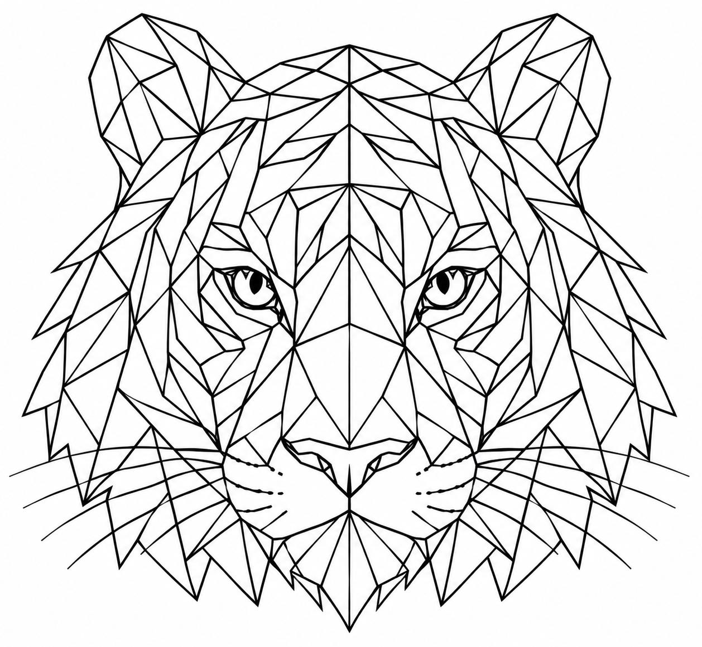
Die Vorlagen
Jede Vorlage gibt es gross auf einer eigenen A4-Seite im PDF «Tierköpfe · Vorlagen». Merke dir, zu welcher Gruppe dein Tier gehört: A symmetrisch (Frontansicht) oder B asymmetrisch (Seitenansicht).
FuchsA Nr. 1
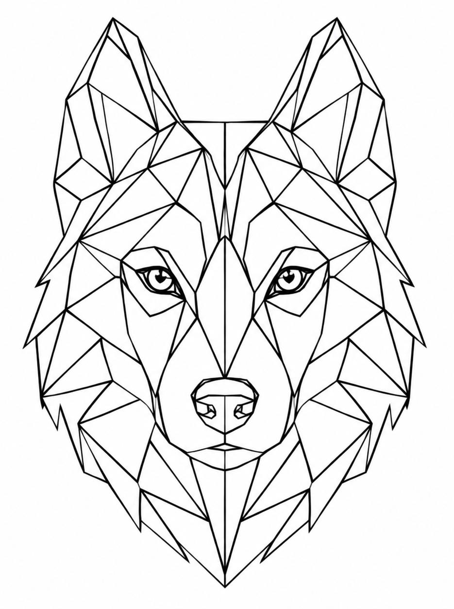
HuskyA Nr. 2
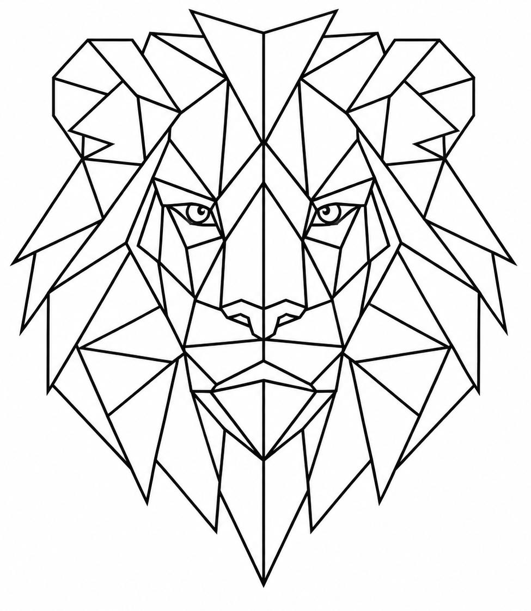
LöweA Nr. 3
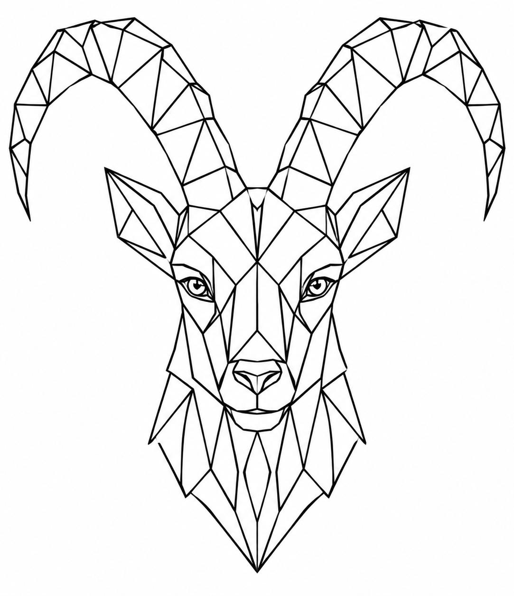
SteinbockA Nr. 4TukanB Nr. 5
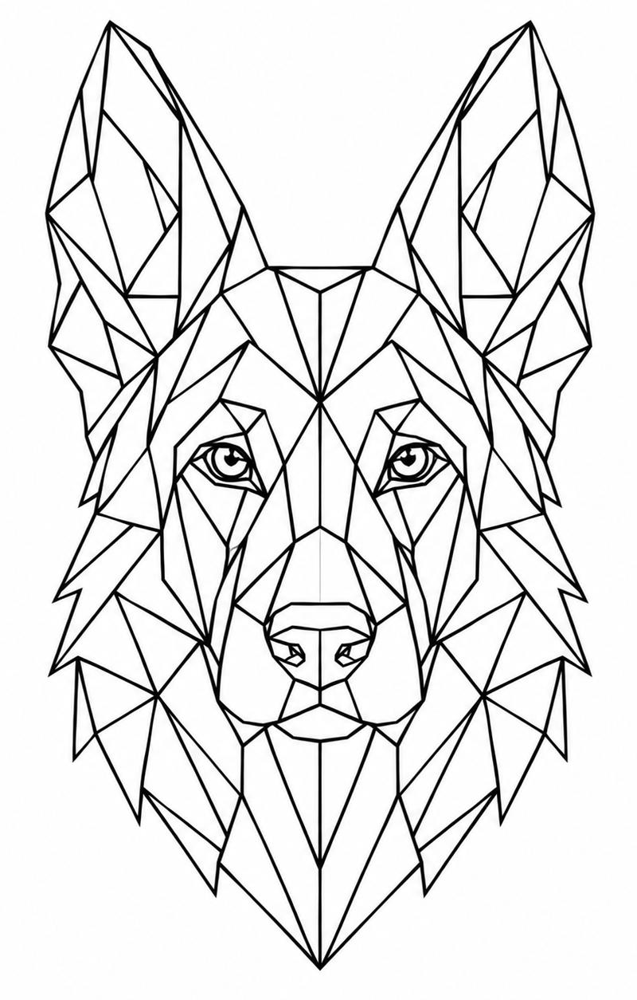
SchäferhundA Nr. 6
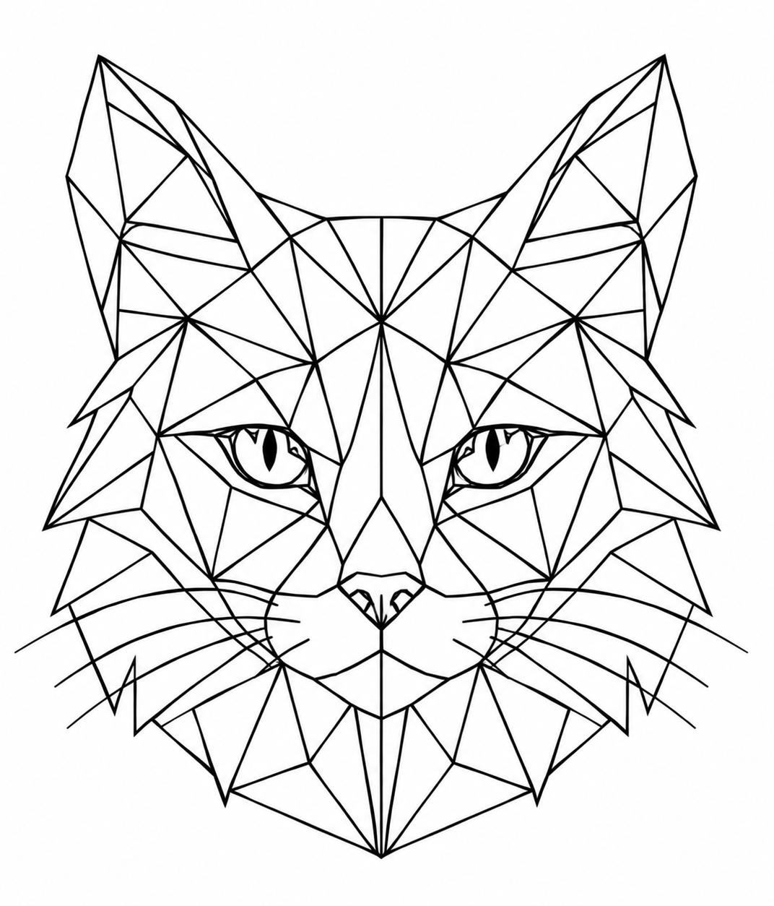
KatzeA Nr. 7
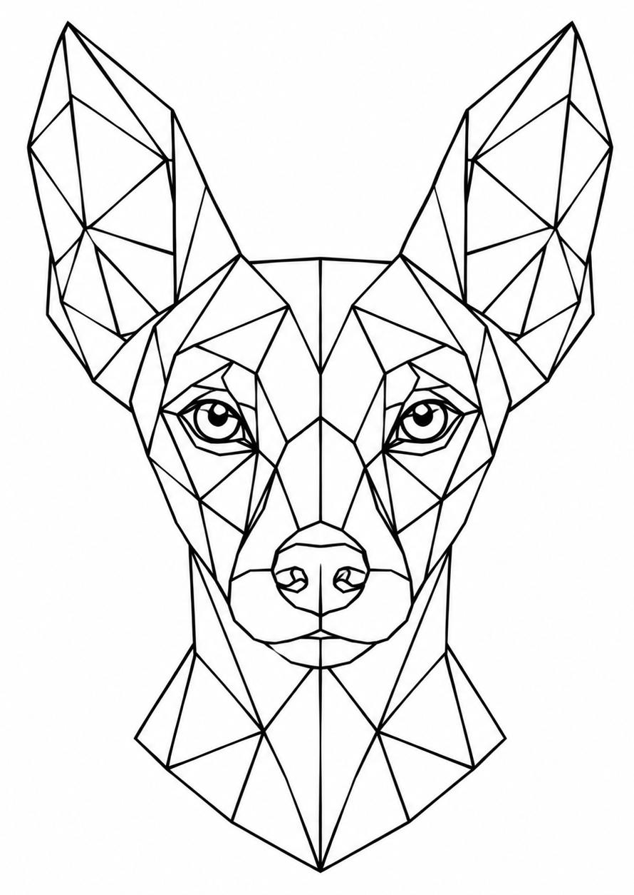
PinscherA Nr. 8
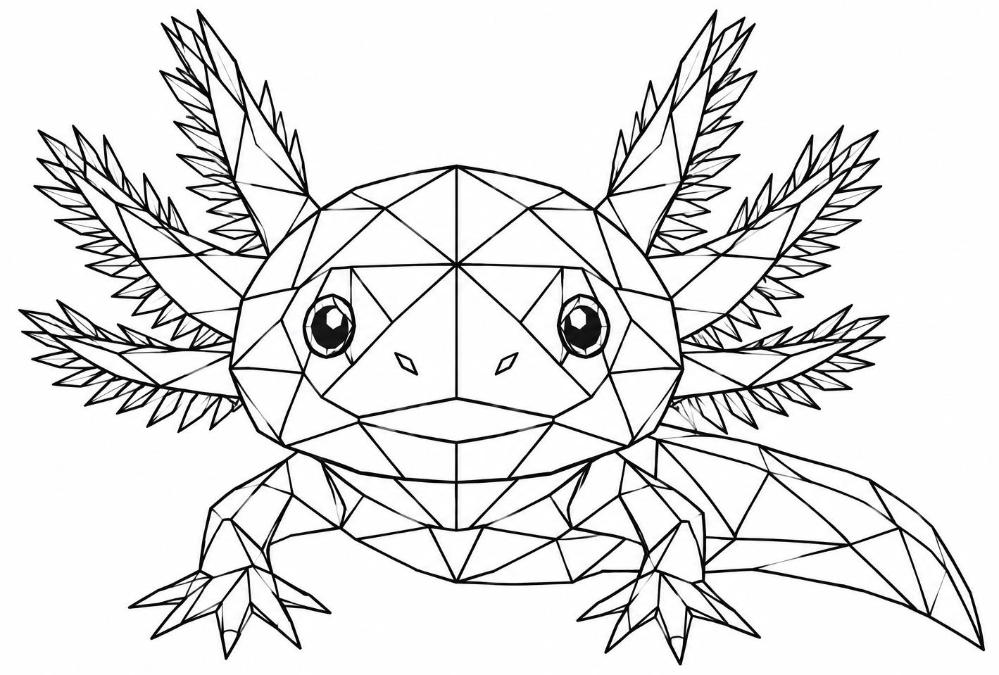
AxolotlB Nr. 9
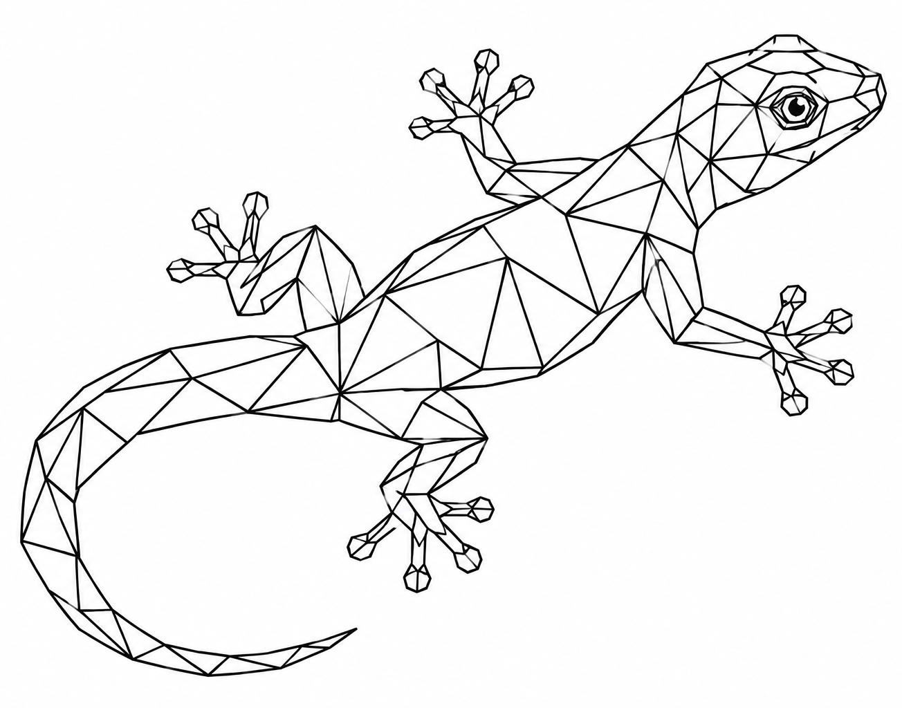
EidechseB Nr. 10TigerA Nr. 11
1–2
Vorbereiten
Vorlage wählen. Schau nach, ob dein Tier zur Gruppe A · symmetrisch oder B · asymmetrisch gehört.
Zeichenblatt A4 bereitlegen: hoch für hohe Vorlagen, quer für breite (Axolotl, Eidechse). Alle Hilfslinien nur ganz dünn mit Bleistift zeichnen.
Material
PapierZeichenblatt A4Vorzeichnenharter Bleistift (2H), RadiergummiMessenLineal oder Geodreieck, ZirkelAusziehenFineliner 0,5 (Umriss) und 0,3 (innen)
3–5Übertragen: Wähle den Weg, der zu deinem Tier passt
Mittellinie senkrecht durch die Mitte ziehen, auf der Vorlage und auf dem Blatt.
Linke Hälfte übertragen. Beginne mit den Punkten auf der Mittellinie (Stirn, Nase, Kinn). Für jeden weiteren Punkt Höhe und Abstand zur Mittellinie messen oder mit dem Zirkel von zwei bekannten Punkten aus finden.
Rechte Hälfte spiegeln: Jeden Punkt auf gleicher Höhe und mit gleichem Abstand zur Mittellinie auf die rechte Seite übertragen. Den Abstand greifst du mit dem Zirkel ab.
P' liegt auf gleicher Höhe wie P und hat den gleichen Abstand a zur Mittellinie.
B
Asymmetrische Tiere
Seitenansicht · Tukan, Axolotl, Eidechse
Achsenkreuz: eine senkrechte und eine waagrechte Hilfslinie durch die Bildmitte, auf der Vorlage und auf dem Blatt.
Startpunkt wählen, einen markanten Punkt (Schnabelspitze, Auge, Schwanzspitze). Abstand zur senkrechten und zur waagrechten Linie messen und übertragen.
Jeden Punkt einzeln übertragen: mit zwei Massen (waagrecht und senkrecht) oder mit dem Zirkel von zwei bekannten Punkten aus. Hier wird nichts gespiegelt.
Axolotl: Der Kopf ist fast symmetrisch, der Schwanz nicht. Übertrage trotzdem jeden Punkt einzeln. Rundungen wie Schnabel oder Schwanz bestehen aus kurzen geraden Strecken. Zähle sie auf der Vorlage.
Jeder Punkt hat zwei Masse: x zur senkrechten, y zur waagrechten Hilfslinie. Beispiel: das Auge P.
6–8
Fertigstellen
Reihenfolge: zuerst der Umriss, dann die grossen Innenlinien, zuletzt die kleinen Felder und die Augen.
Mit der Vorlage vergleichen: Fehlt eine Linie? Treffen sich alle Linien in den Punkten?
Mit Fineliner ausziehen (Umriss 0,5, innen 0,3) und alle Hilfslinien ausradieren.
Erst radieren, wenn die Tinte ganz trocken ist.
Punkt mit dem Zirkel finden (A und B): Von zwei bekannten Punkten aus je einen Bogen schlagen. Der Schnittpunkt ist der neue Punkt.
Häufige Fehler
Linien treffen sich nicht
Die Punkte wurden geschätzt. Linien bleiben offen oder schiessen über den Punkt hinaus.
Lösung: zuerst alle Punkte als feine Kreuzchen setzen, erst dann verbinden.
Hälften ungleich (A)
Die rechte Hälfte wurde nach Augenmass gezeichnet. Der Kopf wirkt schief.
Lösung: jeden Abstand zur Mittellinie mit dem Zirkel abgreifen, nicht schätzen.
Hilfslinien sichtbar
Zu fest vorgezeichnet: Die Hilfslinien lassen sich nicht mehr ganz wegradieren.
Lösung: mit hartem Bleistift (2H) ganz dünn vorzeichnen.
Bewertungscheck
Schätze deine fertige Zeichnung selbst ein, bevor du sie abgibst. Kreuze pro Zeile ein Feld an.
Kriterium
Übertroffen
Erreicht
Teilweise
Nicht erreicht
Die Arbeit ist technisch richtig gezeichnet und enthält keine Fehler.
Linien treffen sich (und überschneiden sich nicht bzw. bleiben nicht offen).
Das Strichbild, die Strichführung ist gleichmässig.
Sorgfältige Ausgestaltung der Arbeit (saubere Fineliner-Linien, Hilfslinien ausradiert, keine Flecken).
Vorlage 1 · Fuchs
A · symmetrisch · Blatt hoch
Vorlage 2 · Husky
A · symmetrisch · Blatt hoch
Vorlage 3 · Löwe
A · symmetrisch · Blatt hoch
Vorlage 4 · Steinbock
A · symmetrisch · Blatt hoch
Vorlage 5 · Tukan
B · asymmetrisch · Blatt hoch
Vorlage 6 · Schäferhund
A · symmetrisch · Blatt hoch
Vorlage 7 · Katze
A · symmetrisch · Blatt hoch
Vorlage 8 · Pinscher
A · symmetrisch · Blatt hoch
Vorlage 9 · Axolotl
B · asymmetrisch · Bild gedreht: Seite quer halten
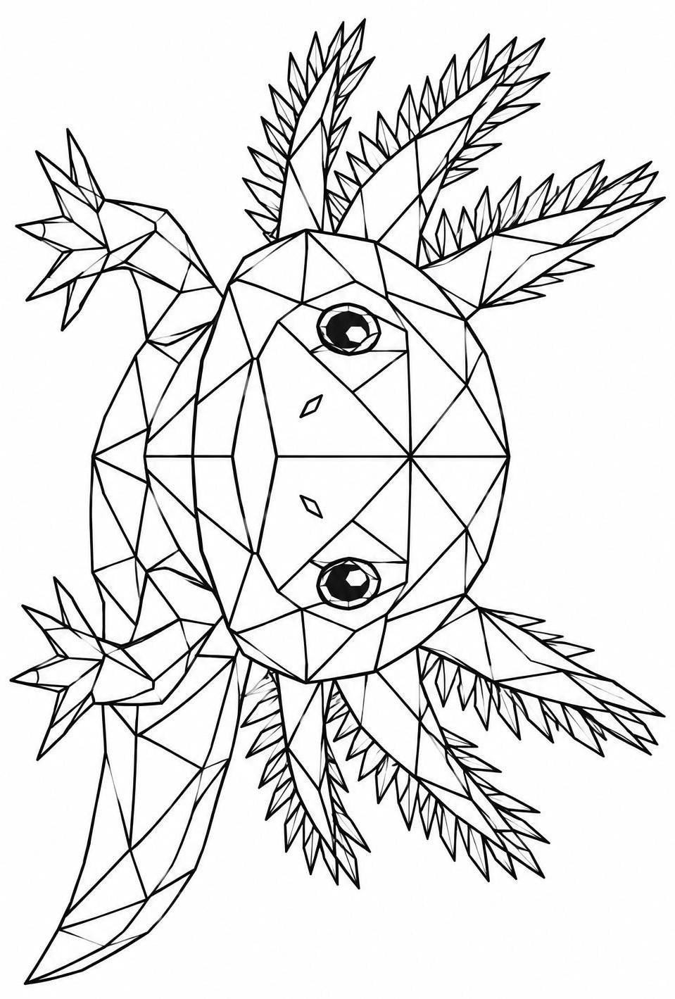
Vorlage 10 · Eidechse
B · asymmetrisch · Bild gedreht: Seite quer halten